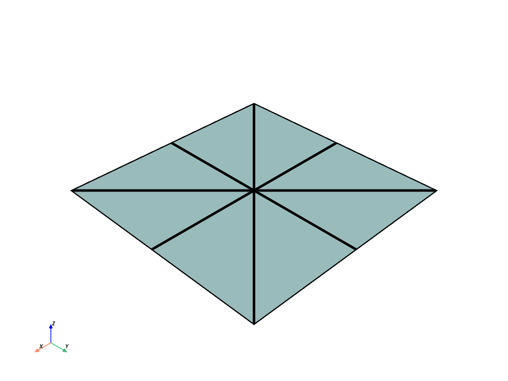
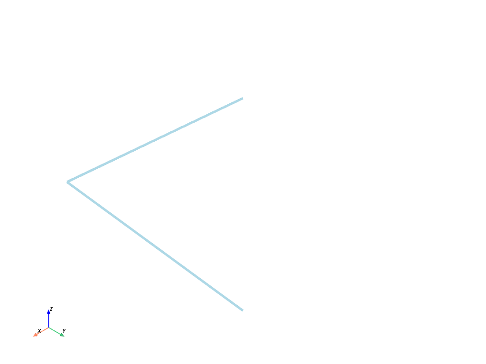
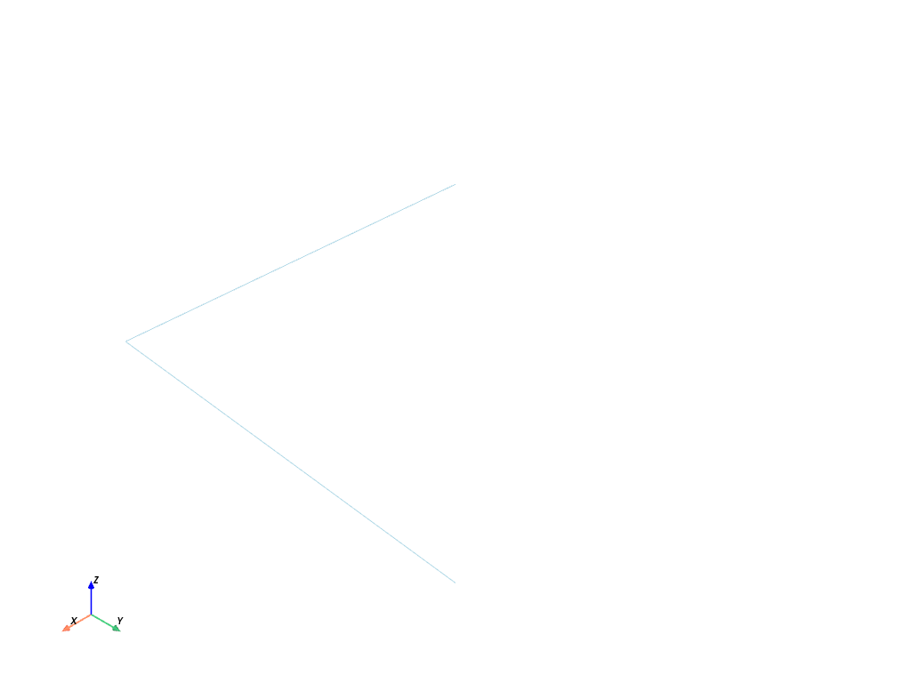
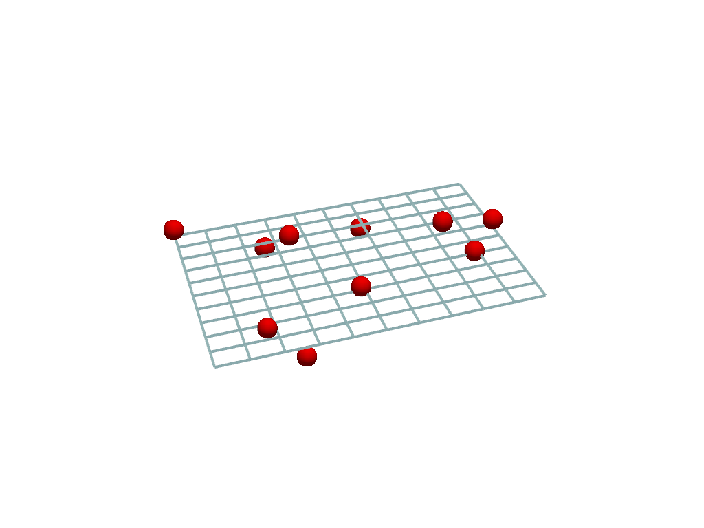

ヘルパー#
pyvista モジュールには，メッシュの作成と操作，またはVTKデータセットとのインターフェースを簡素化するためのいくつかの関数が含まれています．
VTKデータセットのラップ#
- helpers.wrap()[ソース]#
与えられたVTKデータオブジェクトを適切なPyVistaデータオブジェクトにラップします．
その他，対応しているフォーマットは以下の通りです．
2D
numpy.ndarrayXYZの頂点を表す．3D
numpy.ndarrayボリュームを表します．値はスカラーです．3D
trimesh.Trimeshメッシュです．3D
meshio.Meshメッシュ．
バージョン 0.38.0 で変更: 渡されたオブジェクトがすでにラップされたPyVistaオブジェクトである場合，これはノー・オペレーションで，そのオブジェクトを直接返します．以前のバージョンのPyVistaでは，これは浅いコピーを実行します．
- パラメータ:
- dataset
numpy.ndarray|trimesh.Trimesh|vtk.DataSet ラップするデータセット．
- dataset
- 戻り値:
pyvista.DataSetPyVistaのラッピングデータセット．
例
ランダムなポイントクラウドを表すnumpy配列をラップする．
>>> import numpy as np >>> import pyvista >>> points = np.random.random((10, 3)) >>> cloud = pyvista.wrap(points) >>> cloud PolyData (0x7fc52db83d70) N Cells: 10 N Points: 10 X Bounds: 1.123e-01, 7.457e-01 Y Bounds: 1.009e-01, 9.877e-01 Z Bounds: 2.346e-03, 9.640e-01 N Arrays: 0
Trimeshオブジェクトをラップする．
>>> import trimesh >>> import pyvista >>> points = [[0, 0, 0], [0, 0, 1], [0, 1, 0]] >>> faces = [[0, 1, 2]] >>> tmesh = trimesh.Trimesh(points, faces=faces, process=False) >>> mesh = pyvista.wrap(tmesh) >>> mesh PolyData (0x7fc55ff27ad0) N Cells: 1 N Points: 3 X Bounds: 0.000e+00, 0.000e+00 Y Bounds: 0.000e+00, 1.000e+00 Z Bounds: 0.000e+00, 1.000e+00 N Arrays: 0
VTKオブジェクトをラップする．
>>> import pyvista >>> import vtk >>> points = vtk.vtkPoints() >>> p = [1.0, 2.0, 3.0] >>> vertices = vtk.vtkCellArray() >>> pid = points.InsertNextPoint(p) >>> _ = vertices.InsertNextCell(1) >>> _ = vertices.InsertCellPoint(pid) >>> point = vtk.vtkPolyData() >>> _ = point.SetPoints(points) >>> _ = point.SetVerts(vertices) >>> mesh = pyvista.wrap(point) >>> mesh PolyData (0x7fc55ff27ad0) N Cells: 1 N Points: 3 X Bounds: 0.000e+00, 0.000e+00 Y Bounds: 0.000e+00, 1.000e+00 Z Bounds: 0.000e+00, 1.000e+00 N Arrays: 0
単純化された3角形メッシュの作成#
- helpers.make_tri_mesh(faces)[ソース]#
点と面の配列を使用して
pyvista.PolyDataメッシュを作成します．ポイントのNx 3配列と3角形のインデックスのMx 3配列からメッシュを作成し，N個の頂点とM個の3角形を持つメッシュを作成します．この機能は，標準のVTK "padding" カラムを必要とせず，メッシュ作成を簡素化します．
- パラメータ:
- points
np.ndarray 3角形メッシュの頂点を格納する
(N, 3)の形を持つポイントの配列．- faces
np.ndarray 3角形のインデックスを含みます
(M, 3)の形を持つインデックスの配列．
- points
- 戻り値:
pyvista.PolyData3角形メッシュを含みますPolyDataインスタンス．
例
次の使用例は，単位正方形を9つの頂点と8つの面を持つ3角形メッシュに離散化します．
>>> import numpy as np >>> import pyvista >>> points = np.array( ... [ ... [0, 0, 0], ... [0.5, 0, 0], ... [1, 0, 0], ... [0, 0.5, 0], ... [0.5, 0.5, 0], ... [1, 0.5, 0], ... [0, 1, 0], ... [0.5, 1, 0], ... [1, 1, 0], ... ] ... ) >>> faces = np.array( ... [ ... [0, 1, 4], ... [4, 7, 6], ... [2, 5, 4], ... [4, 5, 8], ... [0, 4, 3], ... [3, 4, 6], ... [1, 2, 4], ... [4, 8, 7], ... ] ... ) >>> tri_mesh = pyvista.make_tri_mesh(points, faces) >>> tri_mesh.plot(show_edges=True, line_width=5)

点からの線分#
- helpers.lines_from_points(close=False)[ソース]#
点の配列を指定して，接続された線分セットを作成します．
- パラメータ:
- pointsarray_like[
float] 接続されたセグメントの頂点を表すポイント．たとえば，2つの線分セグメントは
np.array([[0, 0, 0], [1, 0, 0], [1, 1, 0]])のように表されます．- closebool, default:
False Trueの場合，線分セグメントを閉じてループを作成します．
- pointsarray_like[
- 戻り値:
pyvista.PolyDataラインやセルを使用したPolyData．
例
>>> import numpy as np >>> import pyvista >>> points = np.array([[0, 0, 0], [1, 0, 0], [1, 1, 0]]) >>> poly = pyvista.lines_from_points(points) >>> poly.plot(line_width=5)

点からの線分セグメント#
- helpers.line_segments_from_points()[ソース]#
点から接続されていない線分セグメントを生成します．
点が線分セグメントと偶数個の点として順序付けられる．
- パラメータ:
- pointsarray_like[
float] 線分セグメントを表すポイント．2つの頂点が1つの線分セグメントを表すため，偶数を指定する必要があります．たとえば，2つの線分セグメントは
np.array([[0, 0, 0], [1, 0, 0], [1, 0, 0], [1, 1, 0]])のように表されます．
- pointsarray_like[
- 戻り値:
pyvista.PolyDataラインやセルを使用したPolyData．
例
次の使用例は，2つの線分を直角にプロットします.
>>> import pyvista >>> import numpy as np >>> points = np.array([[0, 0, 0], [1, 0, 0], [1, 0, 0], [1, 1, 0]]) >>> lines = pyvista.line_segments_from_points(points) >>> lines.plot()

VTKデータ型との変換#
- helpers.convert_array(name=None, deep=False, array_type=None)[ソース]#
NumPy配列をvtkDataArrayに，またはその逆に変換します．
- パラメータ:
- arr
np.ndarray|vtkDataArray 変換する数値配列あるいはvtkDataArry．
- name
str,optional VTKのデータ配列の名前．
- deepbool, default:
False 入力がnumpy arrayであれば，値を深くコピーします．
- array_type
int,optional vtkType.hで指定されているVTK配列タイプのIDです．
- arr
- 戻り値:
vtkDataArrayornumpy.ndarray変換後の配列です． 入力が
numpy.ndarrayであればvtkDataArrayを返し，入力がvtkDataArrayであれば NumPy のndarrayを返す．
平面を点にフィット#
- helpers.fit_plane_to_points(return_meta=False)[ソース]#
SVDアルゴリズムを用いて，平面を点の集合にフィットさせます．
- パラメータ:
- pointsarray_like[
float] 平面を通過させるための
[N x 3]個の点の列の大きさ．- return_metabool, default:
False Trueの場合，平面の生成に使用される中心と法線も取得します．
- pointsarray_like[
- 戻り値:
pyvista.PolyData平面メッシュです．
numpy.ndarrayreturn_meta=Trueの場合は平面の中心．numpy.ndarrayreturn_meta=Trueの場合は平面の法線．
例
ランダムな点群に平面を当てはめます．
>>> import pyvista >>> import numpy as np >>> cloud = np.random.random((10, 3)) >>> cloud[:, 2] *= 0.1 >>> plane, center, normal = pyvista.fit_plane_to_points( ... cloud, return_meta=True ... )
フィットした平面をプロットします．
>>> pl = pyvista.Plotter() >>> _ = pl.add_mesh( ... plane, color='tan', style='wireframe', line_width=4 ... ) >>> _ = pl.add_points( ... cloud, ... render_points_as_spheres=True, ... color='r', ... point_size=30, ... ) >>> pl.show()
